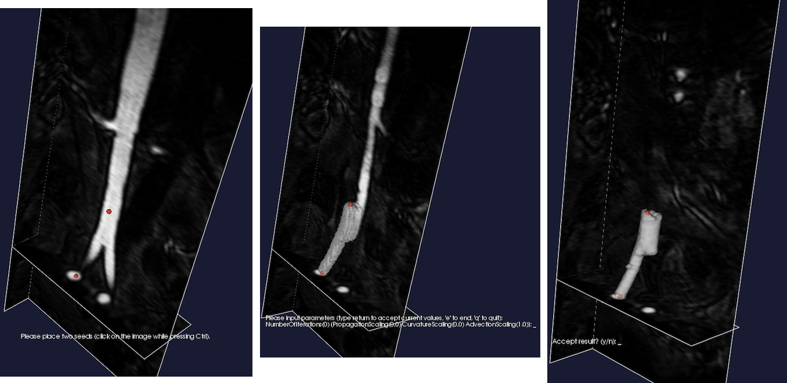
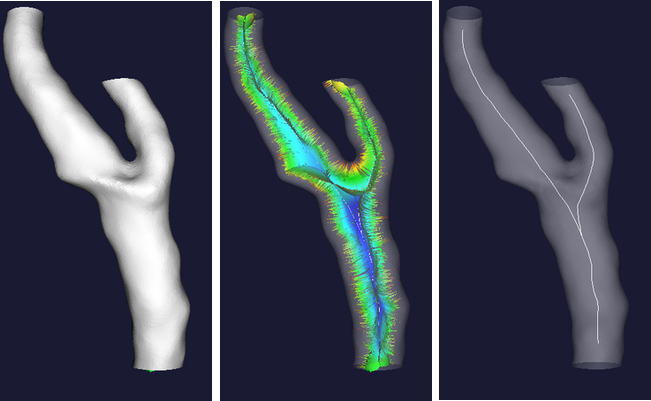
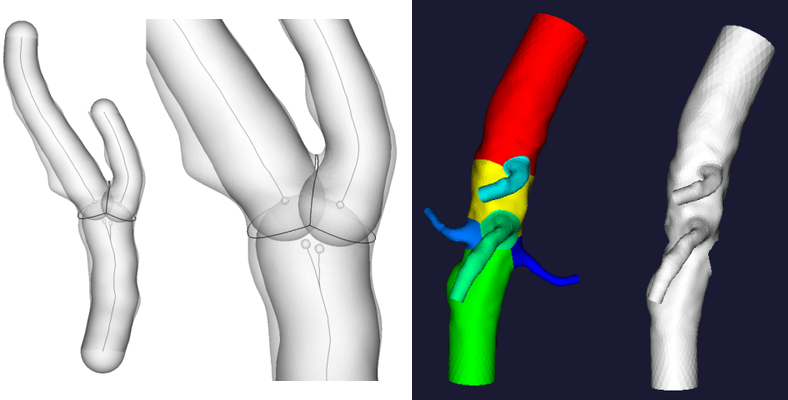
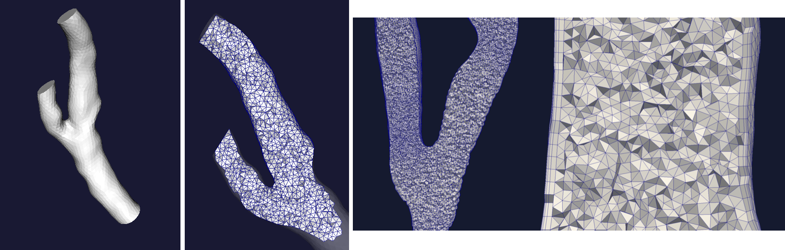
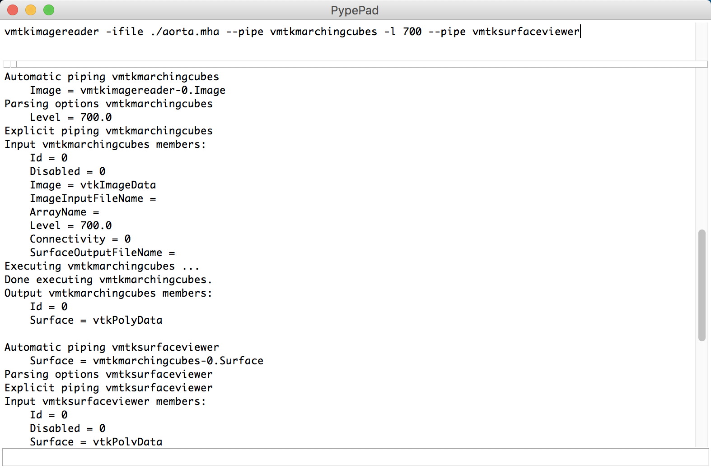

The Vascular Modeling Toolkit: A Python Library for the Analysis of Tubular Structures in Medical Images
Repository link »
PDF link »
View review issue »

Published: 26 May 2018
Izzo et al., (2018). The Vascular Modeling Toolkit: A Python Library for the Analysis of Tubular Structures in Medical Images. Journal of Open Source Software, 3(25), 745. https://doi.org/10.21105/joss.00745
Summary
Vascular disease is the leading cause of death in the developed world (Benjamin et al. 2018). There is a wide body of evidence demonstrating that the geometric structure and layout of the vascular network has a major impact on hemodynamics and the associated severity / progression of vascular diseases such as heart attack, stroke, and aneurysm rupture (Luca Antiga 2002, L. Antiga et al. (2008)). Analysis of diagnostic medical scans designed to highlight vascular structures (such as CT Angiography or MR Angiography) allows for the detailed characterization of these structures in vivo. Such analyses generate quantitative measures which can be used in order to understand both disease characteristics across a population, and the efficacy of potential treatments (Piccinelli et al. 2009, L. Antiga et al. (2008)).
The Vascular Modeling Toolkit (VMTK) is a collection of python-wrapped C++ classes which enable the efficient segmentation, geometric characterization, network analysis, hemodynamic modeling, and visualization of vascular structures from medical images. Image segmentation can be performed via a 3D gradient based level set algorithm which is initialized from user defined seeds. Surface editing, mesh generation, and geometric characterization is largely automated, relying heavily on the centerline definitions calculated from segmented structures. User interaction is facilitated by a unique system of unix-inspired pypes. This interface allows for the composable creation and execution of entire analyses from simple terminal commands, providing a flexible framework for high-level coding, both from the user’s and from the developer’s point of view.
VMTK is a mature package with an active development team and user community. It can be used via its standalone interface, included as a Python or C++ library, or as an extension to the medical image processing platform 3D Slicer (Kikinis, Pieper, and Vosburgh 2014). It has received over 400 citations in scientific publications since its first release in 2004 (L. Antiga et al. 2008). The library relies upon two major open source frameworks for building highly performant and well validated image analysis algorithms and visualizations: the Visualization Toolkit (VTK) and the Insight Segmentation and Registration Toolkit (ITK). Thorough tutorials and documentation are available on the project webpage: www.vmtk.org.
VMTK In Action
Generating a Surface from an Image via Level Set Evolution
Segmenting a complex vascular tract comes down to selecting the endpoints of a branch, letting level sets by attracted to gradient peaks with the sole advection term turned on, repeating the operation for all the branches and merging everything in a single model.
vmtklevelsetsegmentation -ifile foo.dcm --pipe vmtkmarchingcubes -i @.o
--pipe vmtksurfacewriter -ofile foo.vtp
Figure 1: The process of placing seeds on an image (left). Initializing an isosurface from the seeds using the colliding fronts methods (center). Evolving the isosurface through the level set equations (right).
Generating Centerlines from a Surface
Centerlines are determined as the paths defined on Voronoi diagram sheets that minimize the integral of the radius of maximal inscribed spheres along the path, which is equivalent to finding the shortest paths in the radius metric.
vmtkcenterlines -ifile foo.vtp -ofile foo_centerlines.vtp
Figure 2: The input surface representation (left). Visualization of the internal subset of the voronoi diagram where each sheet represents a maximum inscribed sphere radius centered at some point in the surface (center). The centerline extracted from the voronoi diagram rendered as in its position within the input surface (right).
Splitting a Surface from its Centerlines
Surface properties can be analyzed, and the surface can be split by analyzing the surface-centerline tube containment relationships.
vmtksurfacereader -ifile foo.vtp --pipe vmtkcenterlines --pipe
vmtkbranchextractor --pipe vmtkbranchclipper -groupids 0 -insideout 1
-ofile foo_sp.vtp
Figure 3: Illustration of the centerline-surface tube containment relationships (left). Visualization of the surface being split into independent groups based on the surfaces membership in a centerline tract/group (right).
Generating a Volumetric Mesh from a Surface
Tetrahedral, mixed tetrahedral, and boundary layer meshes can be generated from a surface and its centerlines.
vmtksurfacereader -ifile foo.vtp --pipe vmtkcenterlines --pipe
vmtkdistancetocenterlines -useradius 1 --pipe vmtkmeshgenerator
-elementsizemode edgelengtharray -edgelengtharray DistanceToCenterlines
-edgelengthfactor 0.3 -boundarylayer 1 -ofile foo.vtu
Figure 4: The input surface representation (left). Visualization of the internal mesh (center). boundary layer generated within the internal mesh (right).
Composable Scripting With Pypes
Pypes is the glue among vmtk scripts. It allows new scripts to be written easily and have a common interface, but, most of all, it allows single vmtk scripts to interact with each other, making VMTK modular and flexible. Pypes can be used from the command line, a python interpreter, or from the custom PypePad user interface.

Figure 5: Pypepad user interface. vmtkimagereader specifies it’s input file name with the -ifile flag, and the image is stored in memory as an output member of the script. vmtkmarchingcubes is initialized with this image as an input member, and the target isosurface level is set to 700 with the -l flag; the surface is generated and stored as an output member of the script. vmtksurfaceviewer is initialized with this surface as an input member, and the script displays it as an interactive rendering in a new window.
Acknowledgements & Funding
The Vascular Modeling Toolkit is a community project which is open-source and free of charge. We would especially like to recognize significant infrastructure contributions from the team at Kitware Inc. (www.kitware.com). In addition we would like to acknowledge Orobix Srl. (www.orobix.com) for partially funding continued development efforts of VMTK.
Finally, we would like to that the following persons for their contributions to the VMTK source code (Full Name followed by Github Username in parentheses): Andras Lassoan (lassoan), Jean-Christophe Fillion-Robin (jcfr), Elena Faggiano (ElenaFagg), Kurt Sansom (kayarre), David Ladd (dladd), Steve Pieper (pieper), Daniel Haehn (haehn), Denis Shamonin (dpshamonin), & Sara Zanchi (SaraZanchi).
References
Antiga, L., M. Piccinelli, L. Botti, B. Ene-Iordache, A. Remuzzi, and D. A. Steinman. 2008. “An Image-Based Modeling Framework for Patient-Specific Computational Hemodynamics.” Journal Article. Med Biol Eng Comput 46 (11):1097–1112. https://doi.org/10.1007/s11517-008-0420-1.
Antiga, Luca. 2002. “Patient-Specific Modeling of Geometry and Blood Flow in Large Arteries.” Journal Article.
Benjamin, Emelia J., Salim S. Virani, Clifton W. Callaway, Alexander R. Chang, Susan Cheng, Stephanie E. Chiuve, Mary Cushman, et al. 2018. “Heart Disease and Stroke Statistics—2018 Update: A Report from the American Heart Association.” Journal Article. Circulation. https://doi.org/10.1161/CIR.0000000000000558.
Kikinis, Ron, Steve D. Pieper, and Kirby G. Vosburgh. 2014. “3D Slicer: A Platform for Subject-Specific Image Analysis, Visualization, and Clinical Support.” In Intraoperative Imaging and Image-Guided Therapy, edited by Ferenc A. Jolesz, 277–89. New York, NY: Springer New York. https://doi.org/10.1007/978-1-4614-7657-3_19.
Piccinelli, M., A. Veneziani, D. A. Steinman, A. Remuzzi, and L. Antiga. 2009. “A Framework for Geometric Analysis of Vascular Structures: Application to Cerebral Aneurysms.” Journal Article. IEEE Trans Med Imaging 28 (8):1141–55. https://doi.org/10.1109/TMI.2009.2021652.